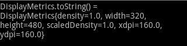

转载于http://blog.csdn.net/zhangqijie001/article/details/5894872 添加一点自己的看法
Android 可设置为随着窗口大小调整缩放比例，但即便如此，手机程序设计人员还是必须知道手机屏幕的边界，以避免缩放造成的布局变形问题。
手机的分辨率信息是手机的一项重要信息，很好的是，Android 已经提供DisplayMetircs 类可以很方便的获取分辨率。下面简要介绍 DisplayMetics 类：
Andorid.util 包下的DisplayMetrics 类提供了一种关于显示的通用信息，如显示大小，分辨率和字体。
为了获取DisplayMetrics 成员，首先初始化一个对象如下：
DisplayMetrics metrics ＝ new DisplayMetrics();
getWindowManager().getDefaultDisplay().getMetrics;
注：构造函数DisplayMetrics 不需要传递任何参数；调用getWindowManager() 之后，会取得现有Activity 的Handle ，此时，getDefaultDisplay() 方法将取得的宽高维度存放于DisplayMetrics 对象中，而取得的宽高维度是以像素为单位(Pixel) ，“像素”所指的是“绝对像素”而非“相对像素”。
通过 DisplayMetrics的 toString()方法可以获取到 DisplayMetrics的大部分 fields信息，如下是在分辨率为 480x320情况下的一些输出信息：

其中，density为显示的逻辑分辨率（文档中说了很多，看得不是很明白）；width及height就为屏幕分辨率（为绝对宽度与高度），与fields中的widthPixels及heightPixels一致；scaleDensity与density一致；xdpi及ydpi为准确物理像素。
下面我们来比较Android中dip, dp, px, sp之间的区别：
dip: device independent pixels(设备独立像素). 不同设备有不同的显示效果,这个和设备硬件有关，一般我们为了支持WVGA、HVGA和QVGA 推荐使用这个，不依赖像素。
px: pixels(像素). 不同设备显示效果相同，一般我们HVGA代表320x480像素，这个用的比较多。
pt: point，是一个标准的长度单位，1pt＝1/72英寸，用于印刷业，非常简单易用；
sp: scaled pixels(放大像素). 主要用于字体显示best for textsize，根据 google 的建议，TextView 的字号最好使用 sp 做单位，
过去，程序员通常以像素为单位设计计算机用户界面。例如，定义一个宽度为300像素的表单字段，列之间的间距为5个像素，图标大小为16×16像素 等。这样处理的问题在于，如果在一个每英寸点数（dpi）更高的新显示器上运行该程序，则用户界面会显得很小。在有些情况下，用户界面可能会小到难以看清 内容。
与分辨率无关的度量单位可以解决这一问题，Android支持下列所有单位：
px（像素）：屏幕上的点。
in（英寸）：长度单位。
mm（毫米）：长度单位。
pt（磅）：1/72英寸。
dp（与密度无关的像素）：一种基于屏幕密度的抽象单位。在每英寸160点的显示器上，1dp = 1px。
dip：与dp相同，多用于android/ophone示例中。
sp（与刻度无关的像素）：与dp类似，但是可以根据用户的字体大小首选项进行缩放。